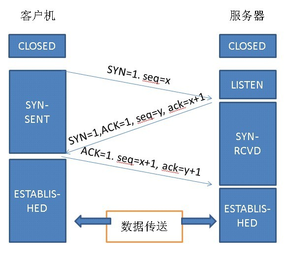
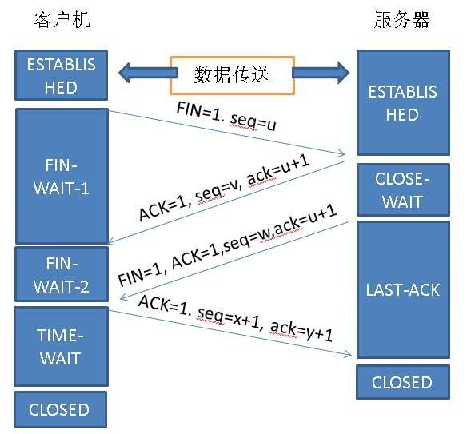
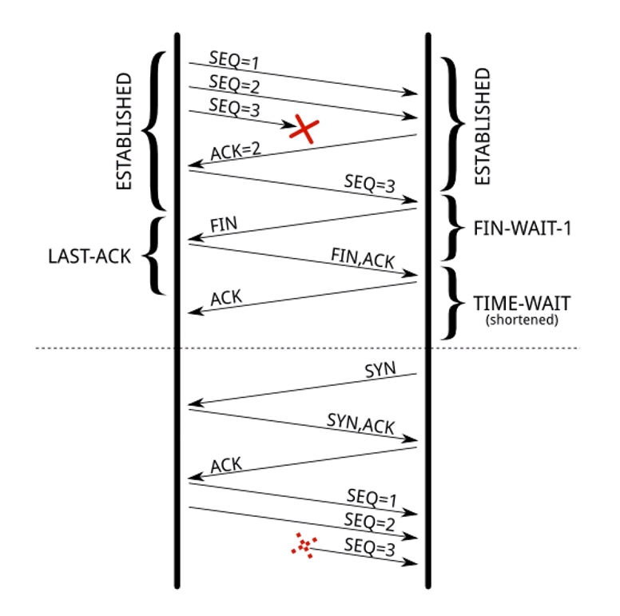

作为一个后端程序员，网络连接这块是一个绕不过的砍，当你在做服务器优化的时候，网络优化也是其中一环，那么作为网络连接中最基础的部分-TCP连接你了解吗？今天我们来仔细看看这个部分。

listen状态SYN_SENT状态SYN_RCVD状态ESTABLISHEDESTABLISHED其中步骤2~4就是三次握手，那么为什么需要三次握手呢？为什么不是一次或者两次握手呢？
首先，我们需要知道，只有当服务器和客户端都能确保自己能够发消息和接收消息，这次网络通信才算成功的。
步骤2的作用是让服务器知道了自己是可以接收消息的。
步骤3的作用是让客户端知道自己发送消息和接收消息的功能是OK的，发送消息的能力是通过服务器返回的ack=x+1确认的，因为这个值基于当初客户端发送的消息seq=x。接收消息的能力是因为收到了服务器的返回。
步骤4的作用是让服务器端知道自己发送消息的能力是OK的（和步骤3类似）。
linux服务器可以利用netstat -anp | grep tcp命令，查看服务器上各个端口和应用的连接状态。
你还可以通过修改linux的配置文件/etc/sysctl.conf，调整各个状态的数量
SYN_SENT状态相关nct.ipv4.tcp_syn_rctries = 6net.ipv4.ip_local_port_range = 32768 60999SYN_RCVD状态相关SYN_RCVD状态连接的最大个数net.ipv4.tcp_max_syn_backlognet.ipv4.tcp_synack_retries说完了TCP建立连接，接下来，我们再来看看TCP正常断开连接的过程

FIN_WAIT1状态CLOSE_WAIT状态FIN_WAIT2状态LAST_ACK状态TIME_WAIT状态CLOSED状态CLOSED状态其中，步骤2、3、5、6即为4次挥手。
TIME_WAIT状态及其优化看完之后，大家想必会有一个疑问，为什么TIME_WAIT状态需要保持2MSL？因为这可以保证至少一次报文的往返时间内，端口是不可复用的。
假设TIME_WAIT状态的持续时间很短，我们来模拟下面这种场景：

TIME_WAIT状态（假设这个状态很短）。因此这也是TIME_WAIT状态需要保持2MSL的原因，如果这么长时间也没有收到报文，即使有正确的报文从客户端发出，也已经过期了，因此不会影响到之后的通信。
但这同样也会带来一个问题，TIME_WAIT状态保持的时间较长，假设服务器端有大量TIME_WAIT状态的TCP连接，就相当于白白浪费掉大量的服务器资源(端口)。此时，我们可以通过修改以下配置进行服务器调优：
net.ipv4.tcp_tw_reuse = 1TIME_WAIT状态的端口net.ipv4.tcp_timestamps = 1CLOSE_WAIT状态如果服务器端有大量CLOSE_WAIT状态的连接，很有可能是应用进程出现bug，没有及时关闭连接。
FIN_WAIT1状态调整发送FIN报文的重试次数，0相当于8
net.ipv4.tcp_orphan_retries = 0FIN_WAIT2状态调整保持在FIN_WAIT2状态的时间
net.ipv4.tcp_fin_timeout = 60看到这里，想必你应该对TCP连接有了一个大致的了解。现在服务器大多都用了nginx做了负载均衡，因此，我们可能需要在此基础上了解一些nginx相关的配置原理，这样应该会对我们的服务器性能调优会有更大的帮助。有兴趣的同学不妨可以去了解一下，如果有什么新发现想和作者探讨的，欢迎在下方留言。
有兴趣的话可以关注我的公众号，说不定会有意外的惊喜。